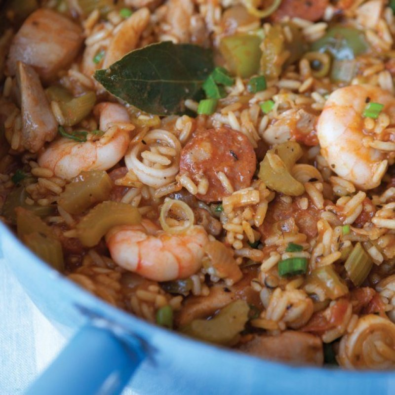

Southern-Style Jambalaya Recipe

Description
A Hairy Bikers recipe for a reduced-fat Southern-Style Jambalaya. There are two main forms that exist, Cajun and Creole, and this is an example of the slightly wetter Creole variety. Serves 6 people, prep time is 15 minutes, cooking time is 35 minutes. The photo is taken by Andrew Hayes-Watkins. Recipe has been sourced from here.
Ingredients
- 6 chicken thighs, boned and skinned
- 100g of chorizo
- 1 tbsp of olive oil
- 1 large onion, roughly chopped
- 4 slender celery sticks cut into 1cm slices
- 2 small green peppers, deseeded and cut into 2cm chunks
- 5 large and ripe vine tomatoes, ~475g
- 3 garlic cloves, peeled and crushed
- 1 tbsp paprika
- 1/4 tsp cayenne pepper
- 1 tsp dried thyme
- 1 tsp dried oregano
- 2 bay leaves
- 200g long-grain rice
- 450ml chicken stock
- 100g cooked king prawns, peeled and thawed if frozen
- 6 spring onions, sliced
- sea salt
- black pepper
Steps
- Cut the chicken thighs into bite-sized pieces. Skin the chorizo and cut it into 5mm slices. Heat the olive oil in your pan and then fry the chicken for 3 minutes over a medium heat. Add the chorizo and cook together with the chicken for another 30 seconds, then transfer both to a plate for now.
- Tip out the oil from the pan and then add the onion, celery and green peppers. Cook them for 8-10 minutes or until they are well softened, stirring occasionally.
- While the onion, celery and green peppers are cooking skin the tomatoes. Chop them in half initially to let you remove any green stems, and then roughly chop them so they are ready for adding to the pan.
- Stir the crushed garlic, paprika, cayenne pepper, thyme, oregano and bay leaves into the pan contents and cook for 20-30 seconds. Now turn up the heat slightly and add the chopped tomatoes, cooking for 5 minutes or until they are well softened. Make sure to stir regularly during this step.
- Return the chicken and chorizo to the pan, add the rice and then cook it all for ~1 minute while stirring. Now pour the chicken stock in and then season it all with salt and pepper. Bring the contents up to a simmer and cook it for ~10 minutes or until the rice is tender. You might need to add a little more stock if all the sauce is absorbed before you reach that point. Just remember that you want to retain some sauce for the finished dish, it's not a 'dry' recipe.
- Stir in the prawns and spring onions, cooking and stirring for a further 2 minutes to make sure the prawns are hot enough to serve.
- Enjoy eating!